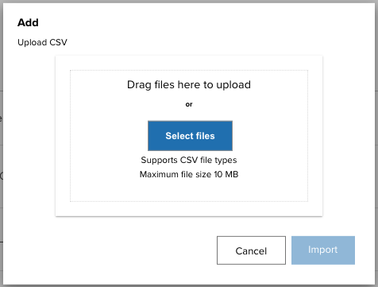
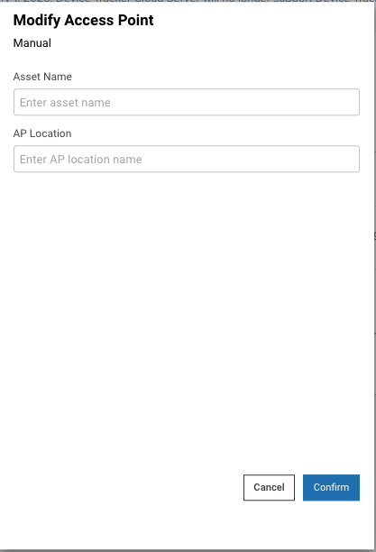
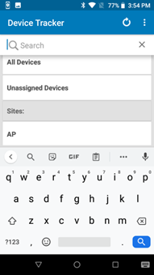

Overview
The dashboard provides a centralized to view of devices, access points (AP) and sites across an organization, with the ability to take action to track devices. It can be viewed through the web portal or the device client app, accessible by administrators and managers. Managers are granted access to data specific to their assigned site. Administrators are granted access to data across all sites in the organization and license information.
Device Tracker supports a single session for each user login and does not support multiple login sessions. If an admin or manager logs in to multiple browser sessions or devices using the same user login, the login sessions are automatically terminated after a period of time.
The web portal also provides data reports to administrators. Daily device summary reports can be sent to designated recipients.
Administrator Dashboard
The administrator dashboard displays device and access point (AP) information across all sites in an organization and allows action to be taken on devices for device tracking.
To login to the dashboard:
Login to the web portal as an administrator.
From the left menu, click Dashboard.
Administrator Dashboard Menu
The subsequent sections describe the menu items listed.
Devices Summary
Devices Summary displays the device count across all sites of an organization based on device state or status. To access Devices Summary, click on Dashboard in the left menu and select Devices Summary.
 Devices Summary - Admin Dashboard
Devices Summary - Admin Dashboard
Each tile represents a device state or status:
- Total – Total number of devices being tracked across all sites.
- To Be Found – Number of devices marked "To Be Found," which initiates the device search.
- Charging – Number of devices that are powered on and in the charging state.
- Discharging – Number of devices that are powered on and draining battery power since they are not being charged.
- Being Found – Number of devices that are being searched. This is triggered when a user initiates a device search.
- Found – Number of devices that are successfully found after a device search. This is triggered when a user indicates the device is found.
- Decommissioned – Number of devices that are designated as decommissioned. These devices are not in the active device pool, the collection of devices with active server communication.
- Cannot Find – Number of devices that could not be found after a search was conducted.
- Disconnected – Number of devices that previously connected to the server but are no longer connected due to lack of communication with the server for approximately 12 minutes.
- Never Connected – Number of devices that are registered but never connected to the server.
- Checked Out - Number of devices that have been checked out by a user.
- Low Battery – Number of devices that have reached the low power threshold, requiring attention for it to be charged prior to battery depletion.
- Idle - Number of devices that are not charging and are in the idle state i.e. have not been moved for the duration of the Device Idle threshold.
Click on a tile to filter by the specific device state or status, displaying a list of corresponding devices.
Filter Found Devices
Navigate using top right buttons above the table:
- View Sites - Navigates to the Sites section, the same section that is accessible from the left menu: Dashboard > Sites.
- View Access Points - Navigates to the Access Points section, the same section that is accessible from the left menu: Dashboard > Access Points. Navigate to View Sites or View Access Points - Admin Dashboard
To display the Devices Summary for a specific site, click the All Sites drop-down and selct the desired site. A limited number of sites are listed. For the full site list, see Sites. Unassigned devices filters the devices that are not assigned to any site. Alternatively, the site name to search for can be entered in the search field: Devices Summary - Select Site
Mobile Devices
Mobile Devices displays the Devices Summary followed by a table of devices that provides access to device information details. Based on the site drop-down selection, the device list includes devices across all sites (if All Sites is selected) or devices to a specific site (if the specific site name is selected). Mobile Devices - Admin Dashboard
The table below the Devices Summary shows the list of devices corresponding to the drop-down selection (All Devices, Unassigned Devices, or site name) with the following information:
- Device Name - Assigned friendly name to the mobile device for ease of identification e.g. based on department or role.
- Serial # - Serial number of the mobile device.
- Device Model - Model number of the device.
- Site - Assigned site of the mobile device.
- Status - Status of the mobile device: In Service, To Be Found, Finding, Found, Cannot Find, Decommissioned, Unlicensed
- Map View - A GPS pin icon is displayed if the GPS device location is known. Click on the pin icon to display the GPS coordinaates and mapped location of the device.
- Location - Device location based on the access point (AP) it is connected to. Displays either the AP friendly name or MAC address (if AP friendly name is not assigned)
- Checked Out By - User that checked out the device.
- Connection - Connected (device is connected to the server) or Not Connected (device previously connected to the server and is now disconnected due to no communication with the server for approximately 12 minutes or longer)
- Battery % - Current battery level of the mobile device.
- Charging - Charging (device is connected to a power supply and charging) or Not Charging (device is not connected to a power supply).
- Last Check In - The elapsed time since the last device check-in.
- Checked Out At - Time stamp when the device was last checked out.
- Last Reported - Time stamp the device last reported to the server.
Also see Manage Devices to add, modify and delete devices.
In the mobile devices table, select one or more devices to take action by ticking the checkbox next to the device name. The Actions button is visible, containing a drop-down menu of actions to take.
Select Action for Selected Device(s)
Select the desired action based on the Edit or Tracking category (options may vary depending on the state of the device):
Edit:
- Site - Assign the device to a selected site.
- Device Name - Change the user friendly device name.
- Delete Device - Delete the device record.
Tracking:
- Request Current Device's Location - Retrieves the location of the selected device. Map Based Locationing must be enabled.
- Mark Device for Finding - This changes the device(s) status to To Be Found, placing the device in the To Be Found list used in the device search process.
- Mark Device as InService - The device status is changed from To Be Found back to In Service.
- Checkin Device - Checks in the checked out device(s).
- Play Sound - Remotely play a sound on the lost or misplaced device to aid in finding it.
- Add Notes - A dialog box appears prompting to enter notes or comments for the selected device(s).
- Recommission Device - Changes the device(s) status from the Decommissioned state (i.e. removed from the active device license pool) and recommissions the device back to the In Service state.
- Decommission Device - Removes the device(s) from the active device pool and places it out-of-service with the Decommissioned status.
Select a single device from the devices table to display the Device Details providing the following information:
- Device Name - Assigned friendly name to the mobile device for ease of identification e.g. based on department or role.
- Serial #- Serial number of the device
- Device Model - Model of the device
- Location - Device location based on last AP connected
- Map View - If Map Based Locationing is enabled, the GPS coordinates are displayed. Click on the GPS coordinates to display a map of the device location.
- Status - One of the following:
- In Service - The device is part of the active device pool and not in any of the other device states
- To Be Found - The administrator or manager tags the device To Be Found, waiting for a user to take action to find the device.
- Finding - The device search is initiated by a user.
- Found - The device is located after conducting the search.
- Cannot Find - The device could not be found after the search was conducted
- Decommissioned - The device is removed from the active device pool
- Unlicensed - The device is not allocated with a license, therefore the app will not operate.
- Battery Level - The battery level of the device (%).
- Battery Status -
- Charging - Device is connected to a power supply and charging.
- Not Charging - Device is not connected to a power supply.
- Note - Comments or notes entered by an administrator or manager capturing information specific to the device.
- License State - Indicates whether or not the device is allocated with a license:
- Licensed - The device is allocated with a license.
- Unlicensed - The device is not allocated with a license, therefore the app will not operate.
- Last Reported - Time stamp when the device last reported to the server.
- Connection State - Device state based on connection to the server:
- Never connected – The device has never connected to the server.
- Connected – The device is connected to the server.
- Disconnected – The device previously connected to the server and is now disconnected due to no communication with the server for approximately 12 minutes.
- Secondary BLE - Identifies the state of the secondary BLE (Bluetooth Low Energy) beacon:
- Enabled - Enables the secondary BLE beacon if it exists on the device. When the device loses power, the secondary BLE continues to transmit beacons to aid in locating the device.
- Disabled - Secondary BLE beacon capability is disabled, if it exists on the device.
- Not Available - The device does not have secondary BLE beacon capability.
- Display ON - Displays true or false if the device is on (may be active) or off (inactive), respectively.
- Checked Out By - The current user that has checked out the device. Mobile Devices - Device Details
Click Actions button to perform one of the following actions based on the Edit or Tracking category (options may vary depending on the state of the device):
Edit:
- Site - Assign the device to a selected site.
- Access Point Friendly Name - Change the friendly name of the access point the device is connected to.
- Device Name - Change the user friendly device name.
- Delete Device - Delete the device record.
Tracking:
- Refresh Current Device's Location - Retrieves the current GPS coordinates of the device. Map Based Locationing must be enabled.
- Mark Device for Finding - This changes the device(s) status to To Be Found, placing the device in the To Be Found list used in the device search process.
- Mark Device as InService - The device status is changed from To Be Found back to In Service.
- Checkin Device - Checks in the checked out device(s).
- Add Notes - A dialog box appears prompting to enter notes or comments for the selected device(s).
- Decommission Device - Removes the device(s) from the active device pool and places it out-of-service with the Decommissioned status.
- Play Sound - Remotely play a sound on the lost or misplaced device to aid in finding it.
- Recommission Device - Changes the device(s) status from the Decommissioned state (i.e. removed from the active device license pool) and recommissions the device back to the In Service state.
- Start Finding - Begins the device search process. Refer to Find a Device. This is visible only if the device is marked To Be Found. During the device search, click one of the following when appropriate:
- Stop Finding - Stops the device search process; changes the state of the device from Being Found back to To Be Found so another device can initiate the finding process.
- Play Sound - Emits a sound from the device being located; listen and follow the sound to locate the device.
- Found - Indicates the device is successfully located after conducting the device search.
- Cannot Find - Indicates the device could not be found after the search was conducted
Map Based Locationing
When Map Based Locationing is enabled, a Map View column is added to the Mobile Devices dashboard:
Click on the GPS icon to display the map and last reported coordinates of the device:
Alternatively, the last reported GPS coordinates can be viewed by clicking on the device row within Mobile Devices, which then displays the GPS coordinates in the Device Details screen:
Map Based Locationing is reported or updated when any of the following events occur:
- Device checkin/checkout
- Device reboot
- Device connects to a network
- Device charging/discharging
- Low battery:
- Low battery threshold is reached on the device as specified in Settings > Automation
- Device battery reaches 18% or lower, then reports again every 2% battery drop
Aside from these event triggers, the manager or administrator can request for the current device's location on-demand in the web portal. This updates the GPS coordinates to the current location. This request is performed either from the Mobile Devices dashboard or the Device Details screen with the action Refresh Current Device's Location.
Mobile Devices dashboard - Request for device's location
Device Details - Request for device's location
Filter By Site
To filter by site, click the All Sites drop-down and select the desired site or enter a site name in the search field. A limited number of sites are listed. For the full site list, see Sites. Select Site - Admin Dashboard
Search Device
To perform a device search within the table, click on the search bar located in the top right above the device table and enter the text to search based on the option selected: Device Model, Serial #, Device Name, Checked Out Username and Location. Search Mobile Devices - Admin Dashboard
Export Data
To export data, click Export Data at the top right. Data is exported to a .CSV file.
Export Mobile Devices - Admin Dashboard
Access Points
Access Points displays the access point information across All Sites or for a specific site:
Site Name - Assigned site registered to the access point
MAC Address - Associated MAC address of the access point
Location Friendly Name - Friendly name registered to the access point to aid in identifying the AP location
Access Points - Admin Dashboard
Data displayed is based on AP registration. For administrators, information is listed across all sites. To filter by site, click the All Sites drop-down and select the desired site or enter a site name in the search field. A limited number of sites are listed. For the full site list, see Sites. Select Specific Site - Admin Dashboard
Also see Manage Access Points to add, modify and delete access points.
Filter AP
By clicking on the Filter drop-down menu, the list of APs from All Sites or a specific site can be further filtered based on:
- Sites not assigned - Lists APs not registered to any site.
- Location friendly names not assigned - Lists APs with no friendly names registered. Filter Access Points - Admin Dashboard
Search AP
To conduct a search for APs, click the search field located at the top right and perform a search based on:
MAC Address
Friendly Name
Search Access Points - Admin Dashboard
Export Data
To export data, click Export Data at the top right. Data is exported to a .CSV file.
Export Access Points - Admin Dashboard
Sites
Sites lists all the sites in the organization with the following information:
Site Name - Name of site
Last Updated - Time stamp of the last edit or update of the site information
Reported Time - Time when the End of Day Report is generated
Time Zone - Designated time zone of the site
Email Subscription - Indicates whether End of Day daily snapshot reports are sent to the designated in the Email List column
Email List - Lists manager and admin email addresses that are to receive the End of Day Reports
Sites - Admin Dashboard
Data displayed is based on site registration.
Search Sites
A search can be conducted using the search field located at the top right. Enter the site name to search.
Export Data
To export data, click Export Data at the top right. Data is exported to a .CSV file.
License Summary
Device Tracker uses the floating license model - licenses are shared among devices from a combined license pool regardless of expiration date. If a license is available, the Device Tracker server allocates a license to the device. When a license is no longer needed, the license is released from the device and returned to the license pool to make available to other devices. Licenses are monitored from License Summary.
After a license expires or when a device is recommissioned, it is automatically allocated a license if available. Administrators can perform the following:
- Monitor licenses.
- Transfer a license from one device to another.
- Remove a license.
To procure licenses, see the License section.
View Licenses
To view license information:
From the administrator dashboard, tap License Summary in the left menu under Dashboard.
Two types of licenses are displayed: Mobile Device and Accessory (such as Bluetooth scanners). The following information is provided for each based on unexpired licenses:
- Total licenses - total number of licenses that have been purchased
- Total licenses available - number of licenses that are available and can be allocated to devices
- Total licenses consumed - number of licenses allocated to devices
- List of licenses shows the License Count and Expiration Date of current licenses. This data is static and removed from the list after the expiration date is surpassed.
- Sync Licenses button refreshes license data on-demand and synchronizes with the Zebra Enterprise Software Licensing system. The license information is updated once each day. The time stamp displayed beside this button indicates the date and time when the license data last synchronized from the licensing server to the web portal.
- Release Licenses - applies to Accessory Licenses. This option allows the administrator to release, or decommision, the license for specific accessory devices. To release a license from an accessory device:
a. Create a .CSV file containing a header row with column names, followed by data rows listing the model number and serial number for each of your devices. For example:
ModelNumber,SerialNumber RS61B0-KBSSZWR,S123456789b. Click Release Licenses from License Summary.
c. Drag the .CSV file or select the file to upload. Click Import.
d. A message appears indicating the import was successful.
e. Click Sync Licenses. The number of Available licenses is incremented and the number of Consumed licenses is decremented.- Total licenses - total number of licenses that have been purchased

License Summary in Device Tracker web portal
License Transfer
Device Tracker supports the transfer of licenses from one device to another by returning the active license to the license pool and reallocating it to a new device. The active license can be released from the device by decommissioning the device or by deleting the device. After the device is decommissioned or deleted, a message appears indicating the device it not licensed. To license the new device, after it communicates with the Device Tracker server it is allocated with the newly released license. The new license allocation is reflected in the License Summary.
Automatic License Renewal
After reaching the expiration date, the license is automatically deallocated from the device and a message is displayed on the device indicating the license has expired. If any licenses are available, the Device Tracker server automatically allocates a license to the device for continued, uninterrupted operation. The newly allocated license is reflected in the License Summary.
Recommission Devices
For devices being recommissioned to place back into service as an active device, if a license is available, the server allocates a license to the device. After the device is licensed, Device Tracker is operational on the device and the allocated license is reflected in the License Summary. If a license is not available, the device remains in the decommissioned state and a note is automatically added indicating there is no license available. This note overwrites any pre-existing note. When a license is available, the admin or manager must recommission the device to allocate the license and manually delete the note.
License Removal
Device Tracker licenses can be removed by decommissioning the device or by deleting the device from Device Tracker. When a device is decommissioned or deleted, the license is automatically removed from the device, as reflected in the License Summary. Device Tracker is no longer operational on the device until it is relicensed.
Important Notes
Important information pertaining to Device Tracker licensing:
- License allocation and deallocation is based on enrollment to the Device Tracker server, regardless of the connection state (disconnected or connected) seen from the device dashboard.
- Never Connected devices are not licensed.
- Due to a constraint from Google Firebase, an attempt to activate licenses on more than 5,000 devices within a span of 5 minutes can result in a denial of licenses to devices. Zebra strongly recommends limiting license activation to a maximum of 5,000 devices within 5 minutes. To circumvent Google’s constraint:
- Device Tracker automatically synchronizes once every 4 hours to allocate licenses to devices.
- Device Tracker administrators can manually trigger license synchronization by using the Sync Licenses button in the License Summary screen on the Device Tracker web portal.
- When allocating licenses to unlicensed devices, license allocation is based on license availabilty and the enroll time with the server. Methods for license allocation:
- Device Tracker automatically synchronizes once every 4 hours to allocate licenses to devices.
- Device Tracker administrators can manually trigger license synchronization by using the Sync Licenses button in the License Summary screen on the Device Tracker web portal.
Manager Dashboard
The manager dashboard displays device and access point (AP) information specific to the manager's assigned site, allows action to be taken on devices for device tracking, and if permitted, allows modification of device and/or AP information.
To login to the dashboard:
Login to the web portal as a manager.
From the left menu, click Dashboard.
Manager Dashboard Menu
Devices Summary
Devices Summary displays the device counts from the site based on device state or status. Access Devices Summary by clicking on Dashboard in the left menu and selecting Devices Summary. Manager Dashboard - Devices Summary
Each tile represents a device state or status:
- Total – Total number of devices being tracked across all sites.
- To Be Found – Number of devices marked "To Be Found," which initiates the device search.
- Charging – Number of devices that are powered on and in the charging state.
- Discharging – Number of devices that are powered on and draining battery power since they are not being charged.
- Being Found – Number of devices that are being searched. This is triggered when a user initiates a device search.
- Found – Number of devices that are successfully found after a device search. This is triggered when a user indicates the device is found.
- Decommissioned – Number of devices that are designated as decommissioned. These devices are not in the active device pool, the collection of devices with active server communication.
- Cannot Find – Number of devices that could not be found after a search was conducted.
- Disconnected – Number of devices that previously connected to the server but are no longer connected due to lack of communication with the server for approximately 12 minutes.
- Never Connected – Number of devices that are registered but never connected to the server.
- Checked Out - Number of devices that have been checked out by a user.
- Low Battery – Number of devices that have reached the low power threshold, requiring attention for it to be charged prior to battery depletion.
- Idle - Number of devices that are not charging and are in the idle state i.e. have not been moved for the duration of the Device Idle threshold.
Click on a tile to filter by the specific device state or status, displaying a list of corresponding devices.
The top right View Access Points button navigates to the Access Points section, the same section that is accessible from the left menu: Dashboard > Access Points.
Mobile Devices
Mobile Devices displays the Devices Summary followed by a table of devices that provides access to device information details.
Manager Dashboard - Mobile Devices
The table shows the list of all devices from the assigned site with the following information:
- Device Name - Assigned friendly name to the mobile device for ease of identification e.g. based on department or role.
- Serial # - Serial number of the mobile device.
- Device Model - Model number of the device.
- Site - Assigned site of the mobile device.
- Status - Status of the mobile device: In Service, To Be Found, Finding, Found, Cannot Find, Decommissioned, Unlicensed
- Location - Device location based on the access point (AP) it is connected to. Displays either the AP friendly name or MAC address (if AP friendly name is not assigned)
- Checked Out By - User that checked out the device.
- Connection - Connected (device is connected to the server) or Not Connected (device previously connected to the server and is now disconnected due to no communication with the server for approximately 12 minutes or longer)
- Battery % - Current battery level of the mobile device.
- Charging - Charging (device is connected to a power supply and charging) or Not Charging (device is not connected to a power supply).
- Last Check In - The elapsed time since the last device check-in.
- Checked Out At - Time stamp when the device was last checked out.
- Last Reported - Time stamp the device last reported to the server.
Select a single device from the devices table to display the Device Details with the following information:
- Device Name - Assigned friendly name to the mobile device for ease of identification e.g. based on department or role.
- Serial #- Serial number of the device
- Device Model - Model of the device
- Location - Device location based on last AP connected
- Status - One of the following:
- In Service - The device is part of the active device pool and not in any of the other device states
- To Be Found - The administrator or manager tags the device To Be Found, waiting for a user to take action to find the device.
- Finding - The device search is initiated by a user.
- Found - The device is located after conducting the search.
- Cannot Find - The device could not be found after the search was conducted
- Decommissioned - The device is removed from the active device pool
- Unlicensed - The device is not allocated with a license, therefore the app will not operate.
- Battery Level - The battery level of the device (%).
- Battery Status:
- Charging - Device is connected to a power supply and charging.
- Not Charging - Device is not connected to a power supply.
- Note - Comments or notes entered by an administrator or manager capturing information specific to the device.
- License State - Indicates whether or not the device is allocated with a license:
- Licensed - The device is allocated with a license.
- Unlicensed - The device is not allocated with a license, therefore the app will not operate.
- Last Reported - Time stamp when the device last reported to the server.
- Connection State - Device state based on connection to the server:
- Never connected – The device has never connected to the server.
- Connected – The device is connected to the server.
- Disconnected – The device previously connected to the server and is now disconnected due to no communication with the server for approximately 12 minutes.
- Secondary BLE - Identifies the state of the secondary BLE (Bluetooth Low Energy) beacon:
- Enabled - Enables the secondary BLE beacon if it exists on the device. When the device loses power, the secondary BLE continues to transmit beacons to aid in locating the device.
- Disabled - Secondary BLE beacon capability is disabled, if it exists on the device.
- Not Available - The device does not have secondary BLE beacon capability.
- Display ON - Displays true or false if the device is on (may be active) or off (inactive), respectively.
- Checked Out By - The current user that has checked out the device.
 Mobile Device Details - Manager Dashboard
Mobile Device Details - Manager Dashboard
Track Devices
To take action to track devices, click the Actions button and select one of the following (options may vary depending on the state of the device):
Tracking:
- Mark Device for Finding - This changes the device(s) status to To Be Found, placing the device in the To Be Found list used in the device search process.
- Mark Device as InService - The device status is changed from To Be Found back to In Service.
- Checkin Device - Checks in the checked out device(s).
- Add Notes - A dialog box appears prompting to enter notes or comments for the selected device(s).
- Recommission Device - Changes the device(s) status from the Decommissioned state (i.e. removed from the active device license pool) and recommissions the device back to the In Service state.
- Decommission Device - Removes the device(s) from the active device pool and places it out-of-service with the Decommissioned status.
The Actions menu is accessible from the Mobile Devices screen after selecting a device or from the Device Details screen.
| Manager access to actions from device selection in Mobile Devices | Manager access to actions from Device Details |
Search Devices
To search for a device in the table, click the search bar located in the top right above the device table and enter the text to search based on Device Model, Serial Number, Device Friendly Name, Checked Out Username and Location. Mobile Devices Search - Manager Dashboard
Modify Devices
Managers can modify a device name if the option Allow managers to modify device name is enabled from the Registration settings. The device name is modified either manually (for a single device change) or by uploading the CSV file containing the updated information (for multiple device changes).
Manual
To modify the device name manually:
- Login to the web portal as a manager.
- From the left menu, under Dashboard select Mobile Devices.
- Check the checkbox for the device. From the Actions menu that appears, select Device Name under Edit.
- Enter the new device name.
- Click Confirm. The device name is changed.
CSV Upload
To modify the device name, create a .CSV containing the updated device name(s) and perform the following steps:
- Login to the web portal as a manager.
- From the left menu, under Dashboard select Mobile Devices.
- Click the Manage button and select Modify.
- Click Select file and browse to the desired .CSV file, or drag and drop the .CSV file.

- The selected file name is displayed. Click Import.
- If successful, a message appears indicating the import was successful.
Export Data
To export data, click Export Data at the top right. Data is exported to a .CSV file.
Access Points
Access Points displays the access point information for APs within the assigned site (based on AP registration:
Site Name - Assigned site registered to the access point.
MAC Address - Associated MAC address of the access point.
Location Friendly Name - Friendly name registered to the access point to aid in identifying the AP location.
Access Points - Manager Dashboard
Filter
Click the Filter drop-down menu to filter based on Location friendly names not assigned, listing APs with no friendly names registered. Action can further be taken to assign a friendly name to aid in identifying the AP location.
Access Points Filter - Manager Dashboard
Search
To conduct a search for APs, click the search field located at the top right and perform a search based on MAC Address or Location.
Access Points Search - Manager Dashboard
Add Access Points
Managers can add access points if the option Allow managers to modify access points is enabled from the Registration settings. The access point is added either manually (for single access point change) or by uploading the CSV file containing the updated information (for multiple access point changes). See Mange Access Points for guidance on creating the .CSV file.
Manual
To add the access point manually:
- Login to the web portal as a manager.
- From the left menu, under Dashboard select Access Points.
- Click Manage. From the dropdown, select Add.
- Provide the following information:
- Site - Select site location of AP
- MAC Address - Enter MAC address of AP
- Asset Name - (Optional) Enter asset name used by IT admin for drawings, labeling of hardware, etc.
- AP Location - Enter location friendly name, useful to identify general device location
- Click Continue. The AP is added.
CSV Upload
To add the access point, create a .CSV containing the updated access point information and perform the following steps:
- Login to the web portal as a manager.
- From the left menu, under Dashboard select Access Points.
- Click Manage. From the dropdown, select Add.
- Select Upload CSV and click Continue.

- Click Select files and browse to the desired .CSV file, or drag and drop the .CSV file. 
- The selected file name is displayed. Click Import.
- If successful, a message appears indicating the import was successful.
Modify Access Points
Managers can modify access points if the option Allow managers to modify access points is enabled from the Registration settings. The access point is modified either manually (for single access point change) or by uploading the CSV file containing the updated information (for multiple access point changes). See Mange Access Points for guidance on creating the .CSV file.
Manual
To modify the access point manually:
- Login to the web portal as a manager.
- From the left menu, under Dashboard select Access Points.
- Check the checkbox next to the access point. From the Actions menu that appears, select Modify Details.
- Perform the following:
- Asset Name - Enter the asset name
- AP Location - Enter the AP location name 
- Click Confirm. The selected access point is modified.
CSV Upload
To modify the device name, create a .CSV containing the updated device name(s) and perform the following steps:
- Login to the web portal as a manager.
- From the left menu, under Dashboard select Access Points.
- Click Manage. From the dropdown, select Modify.
- Select Upload CSV and click Continue.

- Click Select files and browse to the desired .CSV file, or drag and drop the .CSV file.
- The selected file name is displayed. Click Import.
- If successful, a message appears indicating the import was successful.
Delete Access Points
Managers can delete access points if the option Allow managers to modify access points is enabled from the Registration settings. The access point is removed either manually (for single access point change) or by uploading the CSV file containing the information to remove (for multiple access point changes). See Mange Access Points for guidance on creating the .CSV file.
Manual
To delete the access point manually:
- Login to the web portal as a manager.
- From the left menu, under Dashboard select Access Points.
- Check the checkbox next to the access point. From the Actions menu that appears, select Delete.
- Select whether or not to delete all records.
- Click Confirm. The access point is deleted.
CSV Upload
To delete the access point, create a .CSV containing the access point(s) and perform the following steps:
- Login to the web portal as a manager.
- From the left menu, under Dashboard select Access Points.
- Click Manage. From the dropdown, select Delete.
- Select Upload CSV and click Continue.

- Click Select files and browse to the desired .CSV file, or drag and drop the .CSV file.

- The selected file name is displayed. Click Import.
- If successful, a message appears indicating the import was successful.
Export Data
To export data, click Export Data at the top right. Data is exported to a .CSV file.
Device Dashboard
In addition to the dashboard in the web portal, administrators and managers can access their respective dashboard on the device from the client app to view assets, manage assets and track devices.
Administrator/Manager Login
To login to the client app as an administrator or manager:
- Launch the Device Tracker app.
- If the Checkout feature is enabled, scan a barcode to checkout the device.
- Tap the options menu at the top right and select Admin/Manager Login.
- Enter the administrator/manager login credentials or scan the barcodes for the username and password.
- Perform the required tasks.
- Logout when complete. Tap the options menu at the top right and select Admin/Manager Logout.

|

|
|
| Administrator view of all sites | Manager view of assigned site |
After logging in as administrator on the device, tap on the top right option menu and select one of the following:
- Admin/Manager Logout – logs out the administrator or manager.
- Settings – displays information and options:
- Import Access Points/Sites/Devices - import access point, site and device data to aid in locating devices. See Site, Access Point, and Device Data.
- Device Friendly Name – displays the friendly name assigned to the device.
- Site Name – displays the friendly name assigned to the site location.
Device Information
Administrators and managers have additional capability to view data:
Site List – administrator access only; lists the sites in the organization
Dashboard – administrator and manager access; lists a summary showing metrics based on device tracker and device status
Device List – administrator and manager access; lists devices with capability to view device details
Administrator or manager login is required to access the data.
Site List
After administrator login, a site listing is visible for site selection:
- All Devices – when selected, displays the dashboard of all devices (whether assigned or not assigned to a site) across all sites
- Unassigned Devices – when selected, displays the dashboard of devices that are not assigned to a site.
- Sites - lists all the sites across the entire organization. Select an individual site to display the dashboard for the particular site.
Site list
Dashboard
The dashboard is accessible to administrators and managers, displaying device categories based on device status, along with statistics for each category. For administrators, the dashboard can be displayed for any site selected in the site list, including All Devices (across all sites) or Unassigned Devices. For managers, the dashboard displays information based on the site their device is assigned to. If the manager device is not assigned to a particular site, the dashboard displays information based on all unassigned devices.
Dashboard categories:
- Total Devices – displays the total number of devices being tracked within the particular site. If All Devices is selected instead of a particular site, the total number of devices reflects the devices across all sites. If Unassigned Devices is selected, the total number of devices reflects the devices that are not assigned to any site.
Device status:
- To Be Found – filters devices designated To Be Found where action has not been taken to initiate the search for these devices.
- Being Found – filters devices that are actively being searched. Triggered when a user initiates a device search.
- Found – filters devices that were successfully found after a search. Triggered when a user indicates the device is found.
- Cannot Find – filters devices that could not be found after a search was conducted.
- Decommissioned – filters devices that are designated as decommissioned. These devices are not in the active device pool, the collection of devices with active server communication.
- Unlicensed - the device is not allocated with a license, therefore the app will not operate.
Device battery states:
- Low Battery – filters devices that have reached the low power threshold of 15% remaining battery or lower, requiring attention to be charged prior to battery depletion.
- Charging – filters devices that are powered on and in the charging state.
- Discharging – filters devices that are powered on and discharging.
Device connection states:
- Never Connected – filters devices that are registered but never connected to the server.
- Disconnected – filters devices that have connected to the server but are no longer connected due to no communication with the server for approximately 12 minutes.
If Device Checkout is enabled:
- Checked Out – filters devices that are checked-out by users after scanning their user barcode, associating the user to the device.
 Dashboard
Dashboard
Note: In split-screen mode, when the dashboard is displayed in Device Tracker and the app is not in focus, the app displays a blank screen. When Device Tracker is back in focus, the dashboard is displayed as expected.
Device List
The device list displays all devices corresponding to the selected category in the dashboard. In the dashboard screen, select a category in the list to view the corresponding list of devices. The search result is limited to display 100 records. If this limit is exceeded, a message is displayed below the device list indicating that there are additional records and the search should be refined to avoid exceeding the limit.
Each individual device is displayed as a “device card” that shows information pertaining to that particular device:
Device friendly name (if not available, the device model and serial number is displayed)
Device model and serial number
AP friendly name (if available) or BSSID - Never Connected is displayed if device has never connected to the server. The icon indicates the connectivity state to the access point. A Wi-Fi icon with a slash indicates the device is not connected to the AP.
Device status:
- In Service – device is part of the active device pool and not in any of the other device states
- To Be Found – the administrator or manager tagged the device, waiting for a user to take action to find the device
- Finding – the device search is initiated by another user
- Found – the device is located after conducting the search
- Cannot Find – the device could not be found after the search was conducted
- Decommissioned – device is removed from the active device pool
- Unlicensed - the device is not allocated with a license, therefore the app will not operate.
Top right icon indicates device battery level or charging state.
 Device list from All Devices
Device list from All Devices
Tap and hold on any device card to display the available device actions:
- View Details – displays the Device Details screen, see below.
- Add a Note – enter text to capture comments specific to the device that could be helpful in tracking. For example, when a device is decommissioned a note can be added as follows: “Battery does not charge, needs to be replaced”.
- Start Finding – begins the device search process. Refer to Find a Device. This is visible only if the device is marked To Be Found.
- Recommission – places a device from the decommissioned state back to the In Service state as part of the active device pool.
- Decommission – removes the device from the active device pool and places it out-of-service. This can be used when a device is undergoing repair or is deprecated and no longer in use.
 Device action menu
Device action menu
Device Details
Tap on any device card to display the Device Details screen:
Device Status:
- In Service – device is part of the active device pool and not in any of the other device states
- To Be Found – the administrator or manager tagged the device, waiting for a user to take action to find the device
- Finding – the device search is initiated by another user
- Found – the device is located after conducting the search
- Cannot Find – the device could not be found after the search was conducted
- Decommissioned – the device is removed from the active device pool
- Unlicensed - the device is not allocated with a license, therefore the app will not operate.
Friendly name – the assigned friendly device name as registered by the administrator
Device Model – the model of the device
Serial Number – the serial number of the device
License State:
- Licensed - device is allocated with a license
- Unlicensed - the device is not allocated with a license, therefore the app will not operate.
Site Name – displays the assigned friendly name for the site as registered by the administrator. If no value assigned, it is blank.
Last Connected AP – displays the access point the device was last connected to, which aids in identifying the device location
Last Reported – displays the time stamp of the last time the device reported to the server
Connection State:
- Never connected – the device has never connected to the server
- Connected – the device is connected to the server
- Disconnected – the device previously connected to the server and is now disconnected due to no communication with the server for approximately 12 minutes.
Secondary BLE: identifies the state of the secondary BLE (Bluetooth Low Energy) beacon:
- Enabled - the device has secondary BLE beacon capability and beaconing is enabled. When the device loses power, the secondary BLE continues to transmit beacons to aid in locating the device.
- Disabled - the device has secondary BLE beacon capability and beaconing is disabled
- Not Available - the device does not have secondary BLE beacon capability
Battery Level – displays the battery level (high, medium, or low) along with the percent (%) of battery remaining:
- High – indicates the remaining battery is greater than 66%
- Medium – indicates the remaining battery is within the range 15% to 66%
- Low – indicates the remaining battery is less than or equal to 15%
Battery Status:
- Charging – the device is charging while plugged to a power source
- Not Charging – device is not plugged to a power source
Display On – displays “true” or “false”. If true, it indicates the device display is on and the device may be in active use. If false, it indicates the device display is off, indicating the device is not in active use.
Note – text entered by an administrator or manager capturing information specific to the device.

|
Device details information
Device/Site Search
Two types of searches can be performed:
- Search by site
- Search by device
Search By Site
A site search performs a partial search for the characters entered in the search field. The search results display matches that include the characters being searched for within the site name.
To perform a site search:
From the main site list, tap the search icon at the top.
 Site list with search
Site list with searchEnter the text to search in the field then tap the search icon in the virtual keyboard to start the search. Site search field
The search results are listed in the Sites section. The results include site names that contain the text entered. The search is not case sensitive.
Search by Device
A device search returns a list of devices that match the keyword entered based on the criteria selected: device friendly name, device model, serial number, or AP friendly name. The search result is limited to display 100 records. If this limit is exceeded, a message is displayed below the device list indicating that there are additional records and the search should be refined to avoid exceeding the limit.
To perform a device search:
Tap the search icon located in the lower right of the device list.
Select the type of search to be conducted, whether based on the device friendly name, device model, serial number, AP friendly name or checkout (if checkout is enabled). Enter the text to conduct a search. The search is case-sensitive.
Device searchTap Search.
The search results return matches that begin with the text entered in the search field corresponding with the type of search conducted.
Reports
Reports are provided in the web portal for administrators to monitor device performance, user activity and site activity. Administrators can designate managers or others to receive End of Day Device Summary reports by email.
All data reports are logged in America/Chicago time (CST). If multiple days are selected for the report, the report is provided in a single .ZIP file containing multiple .CSV files, one .CSV file per day. If the data report exceeds 1 GB in size for any day, the report is split into multiple files. Data history remains for up to 3 months.
Events By Site
Events By Site provides a report of event changes witihin a site based on the transition of device states (e.g. disconnected, found, not found, low battery, etc.) when moving from one state to another. A single date or date range may be selected for the report. The site report can be exported as a CSV file. Administrators can view data based on site location or display data across all sites. Managers can view data based on their assigned site.
An event is a transition from one device state to another, regardless of the duration the device remains in the new state. The events for this report are based on the device finding process, device charging, low battery and connection state. The device count for the states are cumulative, incrementing each time a device reaches that state. Data is collected each day at 3 am based on the local site time zone.
Video: Learn about Events by Site reports
To view Events By Site:
- Login to the web portal as an administrator.
- Click Reports in the left menu and click Events By Site.
- In the Site dropdown, select the specific site for which to generate the report, or select All to generate a report for all sites.
- Select the start date and end date to generate the report.
- The data is displayed.
- To download the displayed data in .CSV format, click Export Data.
Data displayed (Note: All device counts are cumulative):
- Disconnected – Number of devices that lost connection to the server at one point in time for at least 12 minutes or more
- To Be Found – Number of devices that were marked "To Be Found," which initiated the device search; this provides an indication on how often devices are becoming misplaced at a site
- Found – Number of devices that are successfully found after a device search
- Being Found – Number of devices that are being searched; this is triggered when a user initiates a device search
- Cannot Find – Number of devices that could not be found after a search was conducted
- Charging – Number of devices that are powered on and in the charging state
- Low Battery – Number of devices that have reached the low power threshold, requiring attention for it to be charged prior to battery depletion
- Moved In - Number of devices that were transferred into the site
- Moved Out - Number of devices that were transferred out of the site
To view event and device details, click on the device count link in the table. The device details include: time stamp, device model, serial number, device name, user, AP location, connection state (connected/not connected), battery %, charging state (charging/not charging), and site.
Details for To Be Found and Found states additionally include:
Breakdown of automatic vs manual events based on device state - specifies whether the event was automatically (via automation rules) or manually triggered (e.g. user changes states during the finding process), categorized by device state transition
List of events based on how the device was flagged as To Be Found or Found. This provides insight into the events that led to the device state.
Average time - average time elapsed across all devices based on one of the following device states:
To Be Found - duration of time while the device is in the To Be Found state
Found - duration of time while a device in the Being Found state transitions to Found state
Total time - total time elapsed across all devices based on one of the following device states:
To Be Found - duration of time while the device is in the To Be Found state
Found - duration of time while a device in the Being Found state transitions to Found state
Details for Moved In and Moved Out additionally include:
Moved In:
Current site - site where device is currently located
First seen - timestamp indicating when the device was moved to the current site
Status - device status (To Be Found, Being Found, etc.) when the device was moved into the current site
Checked Out By - user who checked out the device during its movement into the current site
Last Site - previous site from where the device moved from
Last Seen - timestamp indicating when the device was last seen in the previous site
Status - device status (To Be Found, Being Found, etc.) when the device was moved out of the previous site
Checked Out By - user who checked out the device during its movement out of the previous site
Moved Out:
Last site - previous site from where the device moved from
Last Seen - timestamp indicating when the device was last seen in the previous site
Status - device status (To Be Found, Being Found, etc.) when the device was moved out of the previous site
Checked Out By - user who checked out the device during its movement out of the previous site
Current site - site where device is currently located
First seen - timestamp indicating when the device was moved to the current site
Status - device status (To Be Found, Being Found, etc.) when the device was moved into the current site
Checked Out By - user who checked out the device during its movement into the current site
Last Site - previous site the device moved from
End of Day Device Summary
End of Day Device Summary provides a snapshot of device counts based on their state at that moment in time (e.g. disconnected, found, not found, low battery, etc.). The data is not cumulative. This summary report helps to identify and track the accountability of devices at the end of the day on a daily basis. From the web portal, administrators can display data based on site location or display data across all sites.
End of Day Device Summary reports can be sent by email to administrators, managers or other users. The following are configured either manually or through .CSV file import: email subscription, scheduled report time, email recipients, report criteria (based on device states), and option to include email attachments. The report is sent by email each day when the specified scheduled report time is reached. It is sent from email address zdtrksupport@zebra.com to the list of email recipients specified. Each site can be configured with different scheduled report times. Data is not available for the current date until the scheduled report time elapses.
Video: Learn how to customize and view End of Day reports
To view End of Day Device Summary:
Login to the web portal as an administrator.
Click Reports in the left menu and click End of Day Device Summary.
In the Site dropdown, select the specific site for which to generate the report, or select All to generate a report for all sites.
Select the date to generate the report.
The data is displayed.
To download the displayed data in .CSV format, click Export Data.
Data displayed:
- Site - Name of site
- Total Devices - Number of devices registered with the cloud server at the site
- Never Connected - Number of devices that have never connected to the server
- Disconnected - Number of devices that lost connection to the server
- Checked Out - Number of devices checked out by users and presumed to be in use
- Low Battery - Number of devices that have reached the low power threshold, requiring attention for it to be charged prior to battery depletion.
- Charging - Number of devices charging
- Discharging - Number of devices discharging
- Idle - Number of devices that are not charging and are in the idle state i.e. have not been moved for the duration of the Device Idle threshold
- To Be Found - Number of devices set to "To Be Found" to initiate the finding process
- Being Found - Number of devices in the process of being found
- Cannot Find - Number of devices that could not be found
- Found - Number of devices that were lost or misplaced, then found
- Moved Out - Number of devices transferred out of the site
- Moved In - Number of devices transferred into the site